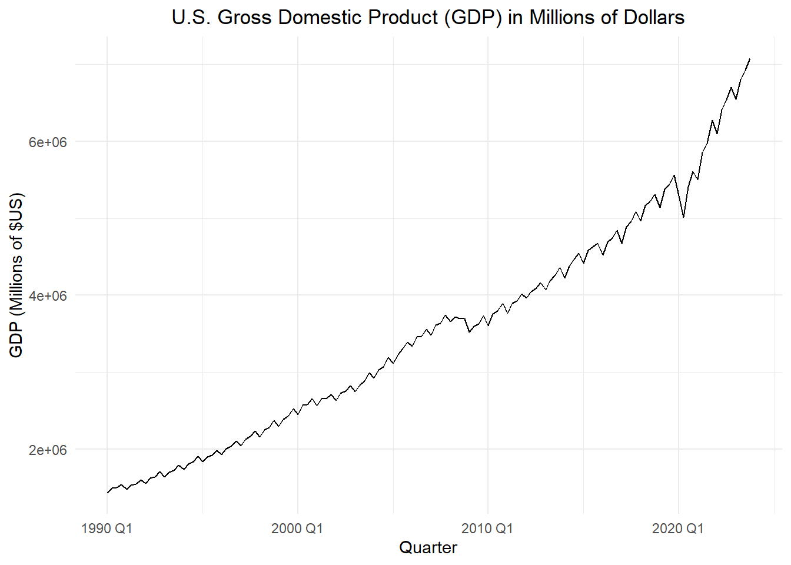

Show the code
# gdp_ts <- rio::import("https://byuistats.github.io/timeseries/data/gdp_fred.csv") |>
gdp_ts <- rio::import("data/gdp_fred.csv") |>
select(-comments) |>
mutate(year_over_year = gdp_millions / lag(gdp_millions, 4)) |>
mutate(quarter = yearquarter(mdy(quarter))) |>
filter(quarter >= yearquarter(my("Jan 1990")) & quarter < yearquarter(my("Jan 2025"))) |>
na.omit() |>
mutate(t = 1:n()) |>
mutate(std_t = (t - mean(t)) / sd(t)) |>
as_tsibble(index = quarter)
gdp_ts |>
autoplot(.vars = gdp_millions) +
labs(
x = "Quarter",
y = "GDP (Millions of $US)",
title = "U.S. Gross Domestic Product (GDP) in Millions of Dollars"
) +
theme_minimal() +
theme(plot.title = element_text(hjust = 0.5))
Show the code
gdp_ts |>
autoplot(.vars = year_over_year) +
stat_smooth(method = "lm",
formula = y ~ x,
geom = "smooth",
se = FALSE,
color = "#E69F00",
linetype = "dotted") +
labs(
x = "Quarter",
y = "Ratio",
title = "Year-Over-Year Change in U.S. GDP"
) +
theme_minimal() +
theme(plot.title = element_text(hjust = 0.5))Show the code
gdp_ts |>
select(year_over_year) |>
acf()
Show the code
gdp_ts |>
select(year_over_year) |>
pacf()